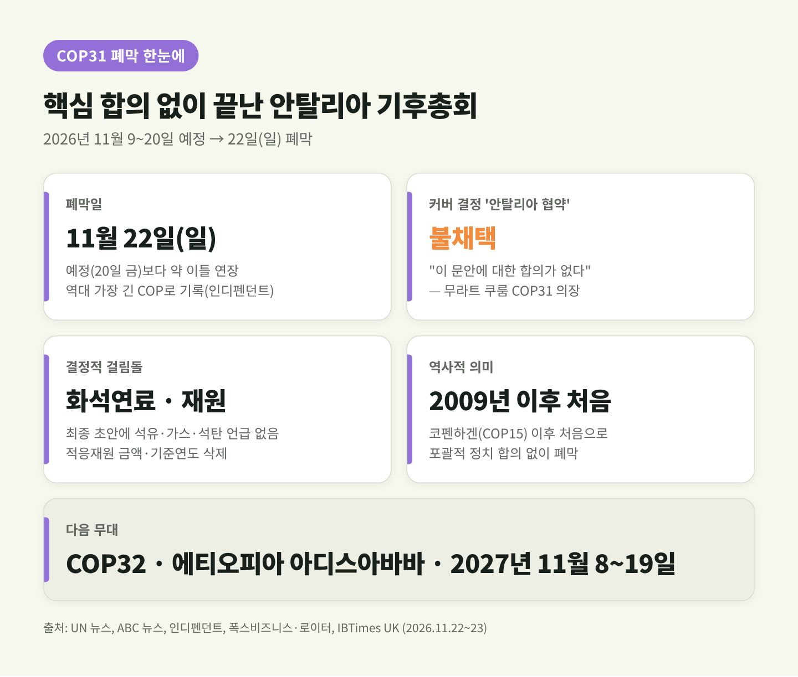
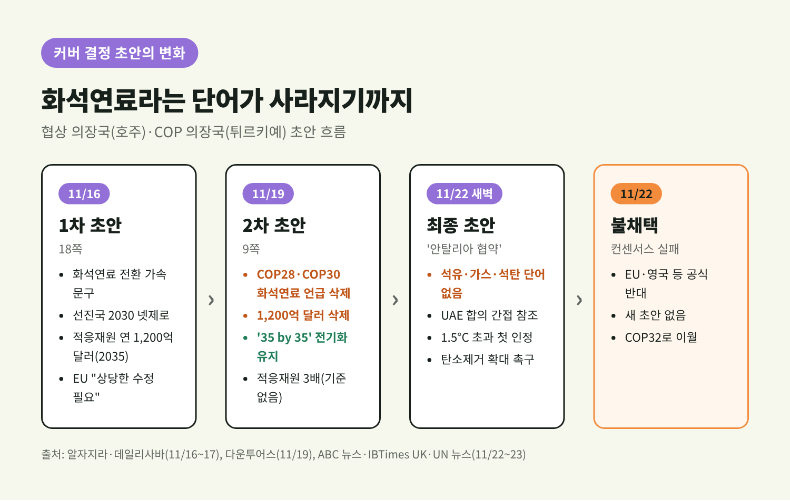
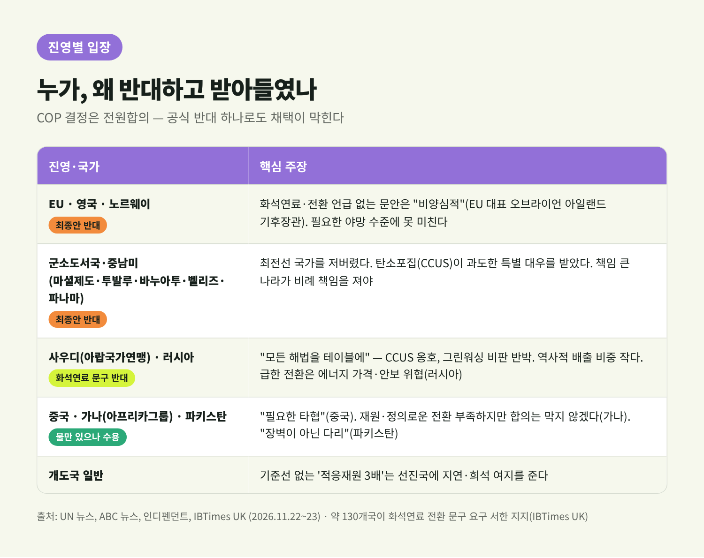
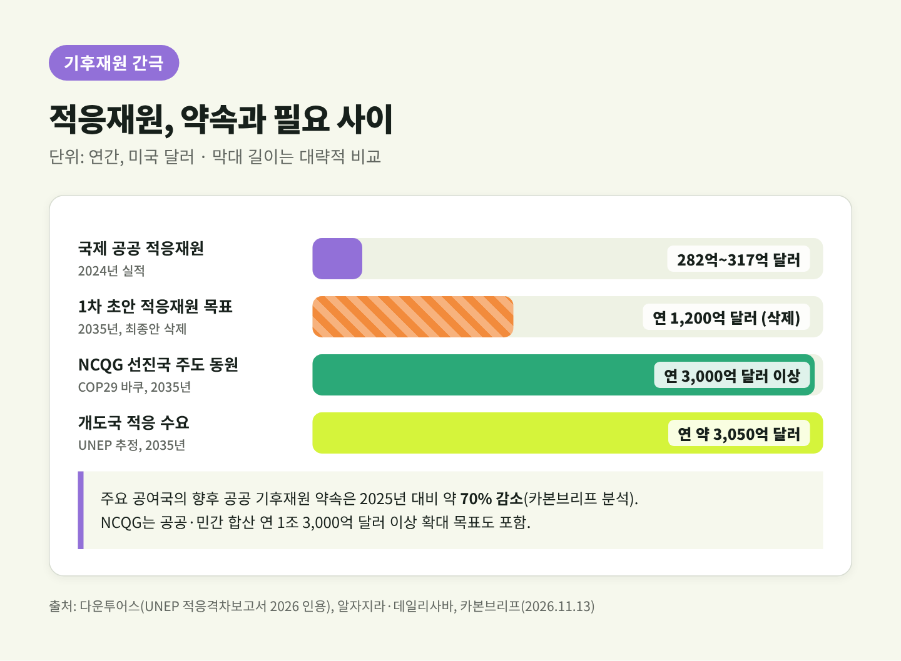
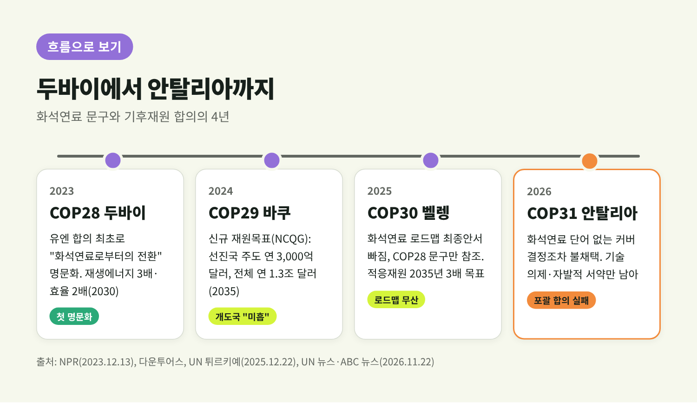
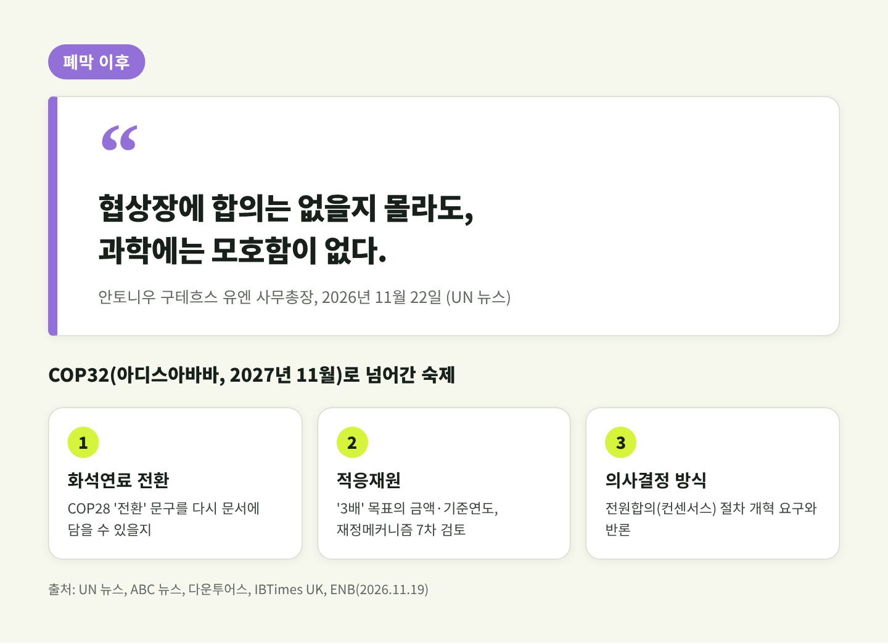

COP31 합의 없이 폐막, 화석연료·기후재원 대립에 '안탈리아 협약' 무산
튀르키예 안탈리아에서 열린 제31차 유엔기후변화협약 당사국총회(COP31)가 핵심 합의 없이 끝났습니다. 이번 글에서는 연장 협상의 최종 결과와 그 의미를 정리해 보겠습니다. 교착 과정은 앞선 글에서 다뤘기에, 여기서는 '왜 결렬됐고 무엇이 남았는지'에 집중합니다.
세 줄 요약
- 11월 22일(일), 이틀 연장 끝에 전체 성과를 묶는 '커버 결정'(초안 별칭 '안탈리아 협약')이 채택되지 못했습니다.
- 최종 초안에 화석연료라는 단어가 빠지자 EU·영국·군소도서국 등이 반대했고, 전원합의 원칙상 그것만으로 채택이 막혔습니다.
- 포괄 합의 없는 폐막은 2009년 코펜하겐 이후 처음입니다. 남은 숙제는 2027년 11월 에티오피아 아디스아바바의 COP32로 넘어갑니다.
■ 이틀 연장 끝에 내려진 '불채택' 선언
COP31은 원래 11월 9일부터 20일(금)까지 열릴 예정이었습니다. 협상은 주말까지 이어졌고, 22일 일요일에야 마지막 본회의가 열렸습니다.
결과는 짧았습니다. 무라트 쿠룸 COP31 의장(튀르키예 환경장관)은 "이 문안에 대한 합의가 없다. 그러므로 이 결정들은 채택되지 않았다"고 선언했습니다(UN 뉴스). 새 초안도 내놓지 않겠다고 했습니다. 쿠룸 의장은 "우리는 최선을 다했다", "이 문안은 누구에게도 강요된 것이 아니다"라고 덧붙였습니다(ABC 뉴스).
기록도 남겼습니다. 영국 인디펜던트는 이번 회의가 2019년 마드리드 COP25(예정보다 44시간 초과)를 넘어 역대 가장 긴 COP가 됐다고 보도했습니다. IBTimes UK는 금요일 예정 종료 시점보다 50시간 넘게 이어졌다고 전했습니다.
무엇보다 무거운 기록은 따로 있습니다. 모든 당사국이 채택하는 포괄적 정치 합의 없이 COP가 끝난 것은 2009년 코펜하겐(COP15) 이후 처음이라는 점입니다(인디펜던트·폭스비즈니스·IBTimes UK).

■ 화석연료라는 단어는 어떻게 사라졌나
이번 결렬의 중심에는 문안 한 줄이 있습니다. '화석연료'라는 말을 넣느냐, 빼느냐였습니다.
초안은 세 번 크게 바뀌었습니다.
- 1차 초안(11월 16일): 협상 의장국 호주가 공개했습니다. 화석연료 전환을 서두르자는 문구, 선진국 2030년 넷제로, 적응재원 연 1,200억 달러(2035년) 목표까지 담긴 18쪽 분량이었습니다. 화석연료 문구는 매체마다 "즉각적 전환"(ABC)과 "단계적 퇴출을 위한 가속 행동"(데일리 사바)으로 다르게 전해졌습니다.
- 2차 초안(11월 19일): 9쪽으로 줄었습니다. 인도 매체 다운투어스에 따르면 COP28의 화석연료 전환 합의와 브라질의 COP30 화석연료 로드맵 언급이 모두 빠졌습니다. 1,200억 달러라는 숫자도 사라졌습니다.
- 최종 초안(11월 22일 새벽): 석유·가스·석탄이라는 단어가 없었습니다. 2023년 두바이 'UAE 합의'를 간접적으로 참조하는 데 그쳤습니다(ABC·IBTimes UK).
빠진 자리에는 다른 요소가 들어섰습니다. 최종 초안은 지구 기온이 1.5°C를 넘어설 것이라는 전망을 처음으로 인정했고, 탄소제거 기술 확대를 촉구했습니다(UN 뉴스·인디펜던트). 폭스비즈니스가 인용한 로이터 보도에 따르면 초안에는 2035년까지 연 5억 톤 이상의 산업용 탄소포집·활용·저장(CCUS) 목표도 담겼습니다. 다만 이 수치가 마지막 문안까지 유지됐는지는 분명하지 않습니다.
1차 초안이 나오자 EU 기후 특사 웝커 훅스트라는 "상당한 수정이 필요하다"고 반발했습니다(알자지라). 당시 EU가 문제 삼은 것은 선진국에 의무를 몰아주는 구조였습니다. 사흘 뒤 문안이 반대 방향으로 깎이자, 이번에는 화석연료 문구의 실종이 반대 사유가 됐습니다.

■ 누가, 왜 반대했나 — 진영별 입장
EU를 대표해 발언한 다라 오브라이언 아일랜드 기후장관은 화석연료나 그로부터의 전환을 언급하지 않는 문안을 "비양심적"이라고 했습니다. 필요한 행동과 야망의 수준에 "근처도 못 간다"고도 했습니다(ABC).
ABC 뉴스가 전한 반대국은 EU, 영국, 벨리즈, 마셜제도, 노르웨이, 파나마, 바누아투입니다. 인디펜던트는 투발루도 수용을 거부했다고 보도했습니다. 투발루의 마이나 탈리아 기후장관은 협상이 마치 "사우디아라비아와 하는 것 같았다"고 말했습니다. IBTimes UK에 따르면 약 130개국이 화석연료 전환 문구를 요구하는 서한을 지지했습니다.
반대편 논리도 분명합니다. 아랍국가연맹을 대표한 사우디아라비아는 탄소포집 언급을 옹호하며 그린워싱이라는 비판을 반박했습니다. "모든 해법을 테이블 위에 둬야 한다"는 입장입니다(UN 뉴스·ABC). 사우디 대표단은 아랍국들이 선의로 협상에 임했고, 이 지역의 역사적 배출 비중은 상대적으로 작다고 강조했습니다(IBTimes UK). 러시아는 화석연료 탈피를 너무 서두르면 에너지 가격과 안보가 위협받는다며 관련 문구에 반대했습니다.
중간 지대의 목소리도 있었습니다. 중국은 문안을 지지하며 모든 당사국에 "필요한 타협"을 촉구했습니다(ABC). 아프리카그룹을 대표한 가나는 재원과 손실·피해, 정의로운 전환에서 부족함을 인정하면서도 합의를 막지는 않겠다고 했습니다. 파키스탄은 "장벽이 아닌 다리"가 필요하다며 패키지 전체를 희생시키지 말자고 호소했습니다(UN 뉴스).
한편 IBTimes UK는 로이터를 인용해 사우디·중국·러시아 관계자들이 의장단 사무실에 자주 드나들었다고 전했습니다. 튀르키예 의장단은 특정 국가를 우대한 적이 없다고 부인했습니다.

■ 또 하나의 걸림돌, 기후재원
호주의 크리스 보웬 협상 의장은 결과를 "매우 실망스럽다"고 평가했습니다. 그가 꼽은 결정적 걸림돌은 두 가지, 화석연료와 기후재원이었습니다(인디펜던트·폭스비즈니스).
재원 쟁점의 핵심은 적응재원입니다. 지난해 브라질 벨렝 COP30에서는 2035년까지 적응재원을 3배로 늘린다는 목표가 나왔습니다. COP31 1차 초안은 여기에 연 1,200억 달러라는 구체적 숫자를 붙였습니다. 최종 초안에는 '3배'라는 말만 남고 금액도, 기준연도도 사라졌습니다. ABC는 최종 문안이 3배 확대 이행 경로를 "논의"하기로 한 수준이었다고 전했습니다. 개도국들은 기준선 없는 목표가 선진국에 지연과 희석의 여지를 준다고 반발했습니다(IBTimes UK).
숫자를 보면 간극이 드러납니다.
- COP29 바쿠 합의(NCQG): 선진국 주도로 2035년까지 연 3,000억 달러 이상, 공공·민간 합산 연 1조 3,000억 달러 이상(다운투어스)
- 개도국 적응 수요: 2035년 연 약 3,050억 달러(UNEP 적응격차보고서 2026)
- 실제 국제 공공 적응재원: 2024년 282억~317억 달러(다운투어스)
- 주요 공여국의 향후 공공 기후재원 약속: 2025년 대비 약 70% 감소(카본브리프 분석)
바베이도스의 미아 모틀리 총리는 이 분석을 인용해 "약속은 지급이 아니다. 그 약속조차 이전보다 70% 낮다"고 꼬집었습니다(카본브리프). 세계 최대 석유·가스 생산국인 미국은 이번에도 대표단을 보내지 않았습니다(카본브리프·NPR). 남은 공여국, 주로 유럽의 부담은 그만큼 커졌습니다.
선진국에도 사정은 있습니다. 선진국들은 커버 결정에 구체적인 적응재원 의무를 명시하는 데 저항해 왔습니다(다운투어스). 보웬 의장 역시 회기 중 "새로운 약속이 아니라 이행의 문제"라고 선을 그은 바 있습니다(UNFCCC 기자회견).

■ 그래도 남은 것들
빈손이라는 평가만으로는 부족합니다. 몇 가지는 남았습니다.
첫째, 기술적 의제입니다. ABC에 따르면 160개 의제 가운데 상당수가 통과됐습니다. 회의 첫날에는 개도국의 오랜 요구였던 독립 '기후재원 작업프로그램' 의제가 채택됐습니다. 선진국의 재원 제공 의무를 규정한 파리협정 9.1조 이행을 다루는 자리입니다(다운투어스).
둘째, 자발적 이니셔티브입니다. 전 세계 최종에너지 중 전기 비중을 2026년 약 23%에서 2035년 35%로 높이자는 '35 by 35' 전기화 서약이 대표적입니다. 지지국은 ABC가 유엔을 인용해 최소 75개국, IBTimes UK는 80개국 이상으로 전했습니다. 지열 확대, 친환경 화물 운송 회랑 같은 소규모 합의도 나왔습니다(인디펜던트).
셋째, 정의로운 전환입니다. 여기서는 평가가 엇갈립니다. 사이먼 스티엘 UNFCCC 사무총장은 정의로운 전환 합의를 진전으로 꼽았습니다. 반면 가나는 문안에 "일반적인 한 문장"만 들어갔을 뿐이라고 했습니다(UN 뉴스).
아쉬운 대목도 함께 봐야 합니다. 결렬 직전 밤, 아프리카그룹은 장기재원 결정을 멈춰 세웠고 러시아는 기후역량강화(ACE) 계획을 막았습니다(폭스비즈니스·로이터). 자발적 서약은 법적 구속력이 없고, 각국이 언제든 발을 뺄 수 있습니다.
■ 두바이에서 안탈리아까지 — 결렬이 갖는 의미
흐름을 짚어보면 이번 결렬의 무게가 분명해집니다.
- COP28 두바이(2023): 유엔 기후 합의 최초로 "화석연료로부터의 전환"을 문서에 담았습니다. 재생에너지 3배, 에너지효율 2배(2030)도 합의했습니다(NPR).
- COP29 바쿠(2024): 신규 기후재원 목표(NCQG) 3,000억 달러·1조 3,000억 달러를 정했지만 개도국은 미흡하다고 비판했습니다.
- COP30 벨렝(2025): 화석연료 로드맵은 최종 문안에서 빠졌고 COP28 문구를 참조하는 데 그쳤습니다. 브라질 의장국이 별도 로드맵을 약속했습니다(UN 튀르키예).
- COP31 안탈리아(2026): 화석연료 단어가 빠진 문안조차 합의되지 못했습니다.
3년 전에는 "전환"이라는 단어를 얻었습니다. 이제는 그 단어를 다시 적는 것조차 합의하지 못했습니다.
구조의 문제도 드러났습니다. COP31은 처음부터 이원 체제였습니다. 튀르키예가 개최와 COP 의장을 맡고, 호주가 협상에 관한 "배타적 권한"을 갖는 협상 의장을 맡았습니다(호주 총리실). 초안을 낸 쪽과 마지막 망치를 든 쪽이 달랐던 셈입니다. 이 구조가 결렬에 얼마나 영향을 줬는지는 아직 평가가 나오지 않았습니다.
전원합의 방식에 대한 문제 제기도 커졌습니다. 앨 고어 전 미국 부통령은 소수 산유국이 화석연료 문구를 거부할 수 있어서는 안 된다며 COP 개혁을 요구했습니다(IBTimes UK). 스티엘 사무총장도 컨센서스 절차가 진화해야 한다고 말했습니다. 반면 세계자원연구소(WRI)의 아니 다스굽타 대표는 이번 결과를 파리협정의 실패가 아닌 "정치적 리더십의 실패"로 규정했습니다(ABC).
과학의 시계는 협상과 무관하게 돌아갑니다. NPR에 따르면 지구는 수년 안에 1.5°C에 도달할 것으로 보이며, 초과 폭을 줄이려면 10~15년 안에 화석연료 사용을 거의 절반으로 줄여야 합니다(유엔 분석). 현 정책대로라면 2100년 기온 상승은 약 2.8°C로 예상됩니다(IBTimes UK).

■ 한국에 주는 함의
한국도 이번 회의의 당사자였습니다. 김성환 기후에너지환경부 장관은 11월 17일(현지) 고위급 회의 국가발언에서 서약을 "실질적인 이행과 전환"으로 옮기자고 했습니다. 한국형 녹색전환(K-GX) 모델 확산과 2035 국가온실가스감축목표(NDC), 2050년까지 5년 단위 감축경로 법제화도 소개했습니다(한국센터).
재원 협상에서 한국은 일본·영국·캐나다와 함께 민간투자를 포함한 다양한 재원 동원 방식을 논의해야 한다는 쪽에 섰습니다(더나은미래). 선진국의 직접 지원 의무를 강조하는 최빈개도국과는 결이 다른 위치입니다. 적응재원 갈등이 다음 회의로 넘어간 만큼, 이 입장은 앞으로도 시험대에 오를 가능성이 큽니다.
국외 감축분의 신뢰성도 과제입니다. 기후단체 플랜1.5는 한국의 국제감축 실적 4,276만 톤 중 약 48%(2,041만 톤)만 실제 감축으로 인정할 수 있다고 추산했습니다(더나은미래). '35 by 35' 전기화, 탄소포집 같은 의제가 국제 논의의 중심으로 올라온 점도 에너지 수입국이자 제조업 수출국인 한국이 눈여겨볼 대목입니다.
■ 다음 무대, 아디스아바바
COP32는 2027년 11월 8일부터 19일까지 에티오피아 아디스아바바에서 열립니다(ABC). 아프리카 대륙에서 열리는 만큼 적응재원과 손실·피해가 더 전면에 설 것으로 보입니다.
넘겨진 숙제는 적지 않습니다. 화석연료 전환과 개도국 재원 동원이 그대로 남았습니다(UN 뉴스). 재정메커니즘 7차 검토도 COP32로 미뤄졌습니다(다운투어스). 과학 보고서를 둘러싼 갈등도 있습니다. 유럽·아프리카·태평양 다수 국가는 2028년 COP33 이전에 IPCC 7차 평가보고서가 나와야 한다고 요구하고, 사우디아라비아가 이 논쟁의 중심에 서 있습니다(알자지라).
유엔 밖의 움직임도 변수입니다. 일부 산유국을 포함한 50여 개국이 유엔 절차 밖에서 화석연료 전환 연합을 만들었습니다(NPR). 파나마 환경장관은 이런 별도 노력이 지금으로서는 최선의 희망이라고 봤습니다. 전원합의의 틀이 막히면 의지가 있는 나라끼리의 '소다자' 협력이 커질 수 있다는 신호입니다.

정리하면 이렇습니다. 안탈리아는 '무엇을 합의했느냐'보다 '무엇을 다시 적지 못했느냐'로 기억될 회의입니다.
구테흐스 사무총장은 폐막 성명에서 이렇게 말했습니다. "협상장에 합의는 없을지 몰라도, 과학에는 모호함이 없다."
산유국은 모든 해법을 테이블에 두자고 하고, 취약국은 화석연료라는 이름을 불러야 한다고 합니다. 두 요구 사이의 간극은 이번에 더 선명해졌습니다. 1년 뒤 아디스아바바에서 그 간극이 좁혀질 수 있느냐고 물으신다면, 지금으로서는 재원이라는 다리가 먼저 놓여야 한다고 답하겠습니다.
참고자료
- UN News, "COP31 ends without climate pact as UN chief warns there is 'no ambiguity in the science'" (2026-11-22) — https://news.un.org/en/story/2026/11/1168855
- ABC News, "UN climate conference ends without its signature agreement as countries clash over fossil fuels and finance" (2026-11-22) — https://abcnews.com/Technology/climate-conference-ends-signature-agreement-countries-clash-fossil/story?id=138359179
- The Independent(Yahoo News 게재), "Cop31 ends with no deal as longest climate summit ever collapses into disarray" (2026-11-22) — https://www.yahoo.com/news/science/articles/cop31-fails-reach-climate-deal-124907599.html
- Fox Business, "UN climate summit in Turkey collapses over fossil fuels, carbon capture and trillion-dollar finance" (2026-11-22) — https://www.foxbusiness.com/energy/un-cop31-climate-summit-collapses-turkey-fossil-fuels
- IBTimes UK, "COP31 Climate Deal Fails as Fossil Fuel Rift and Finance Row Leave Poorer Nations Without Funds" (2026-11-23) — https://www.ibtimes.co.uk/cop31-talks-end-without-overarching-agreement-1834043
- IBTimes UK, "'Complete COP-out': Oil States Accused of Hijacking UN Climate Summit" (2026-11-23) — https://www.ibtimes.co.uk/cop31-ends-without-agreement-fossil-fuels-climate-finance-1834008
- Down To Earth, "COP31: Cover decision draft drops fossil fuel phaseout language, retains '35 by 35' electrification target" (2026-11-19) — https://www.downtoearth.org.in/climate-change/cop31-cover-decision-draft-drops-fossil-fuel-phaseout-language-retains-35-by-35-electrification-target
- Down To Earth, "COP31 adopts climate finance work programme; proposals for adaptation funding, trade measures dropped" (2026-11-10) — https://www.downtoearth.org.in/climate-change/cop31-adopts-climate-finance-work-programme-proposals-for-adaptation-funding-trade-measures-dropped
- Al Jazeera, "Tensions rise over draft climate deal at COP31" (2026-11-17) — https://www.aljazeera.com/news/2026/11/17/tensions-rise-over-draft-climate-deal-at-cop31
- Daily Sabah, "COP31 draft calls for accelerated action to phase out fossil fuels" (2026-11-16) — https://www.dailysabah.com/business/energy/cop31-draft-calls-for-accelerated-action-to-phase-out-fossil-fuels
- UNFCCC, "Transcript of COP31 press conference with COP31 President of Negotiations" (2026-11-16) — https://unfccc.int/node/665163
- NPR(NHPR 게재), "With original goal out of reach, countries push for fossil fuel commitment at COP31" (2026-11-19) — https://www.nhpr.org/2026-11-19/with-original-goal-out-of-reach-countries-push-for-fossil-fuel-commitment-at-cop31
- Carbon Brief, "DeBriefed 13 November 2026" (2026-11-13) — https://www.carbonbrief.org/debriefed-13-november-2026-make-or-bake-electrification-push-climate-finance-down-70
- Earth Negotiations Bulletin Vol.12 No.910 (2026-11-19) — https://enb.iisd.org/sites/default/files/2026-11/enb12910e.pdf
- 호주 총리실, "COP to be hosted by Türkiye with Australia leading negotiations" (2025-11-23) — https://www.pm.gov.au/media/cop-be-hosted-turkiye-australia-leading-negotiations
- UN Türkiye, "As Türkiye Prepares to Host COP31, A Look Back at COP30's Key Outcomes" (2025-12-22) — https://turkiye.un.org/en/node/307475
- NPR, "COP28 in Dubai ends with agreement for nations to transition away from fossil fuels" (2023-12-13) — https://www.npr.org/2023/12/13/1218999261/cop28-in-dubai-ends-with-agreement-for-nations-to-transition-away-from-fossil-fu
- 한국센터, "수석대표 국가발언…'국제협력으로 기후행동 가속화, 기후 다자주의 진전'" (2026-11-17) — https://www.koreancenter.or.kr/news/articleView.html?idxno=1441003
- 더나은미래, "화석연료 놓고 충돌, AI 서약엔 기대와 우려…COP31 개막 첫 주 살펴보니" (2026-11-13) — https://futurechosun.com/?p=166644